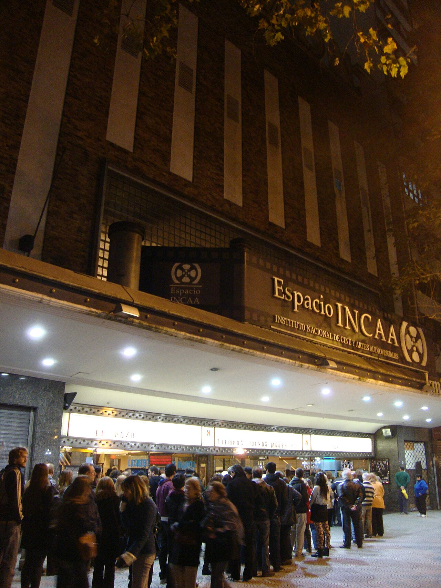
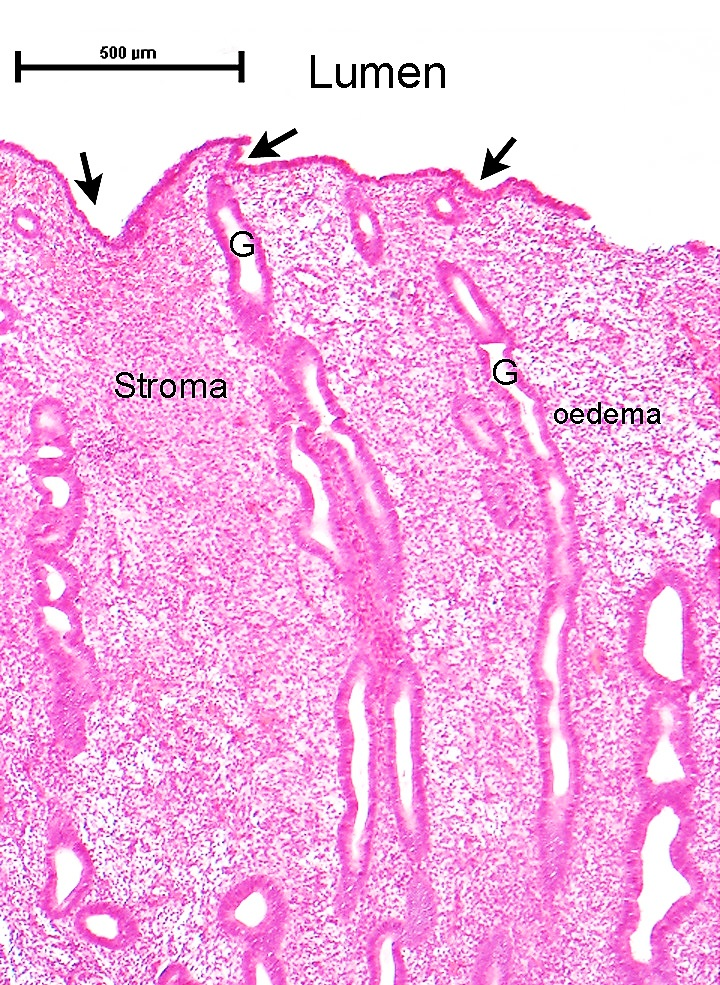
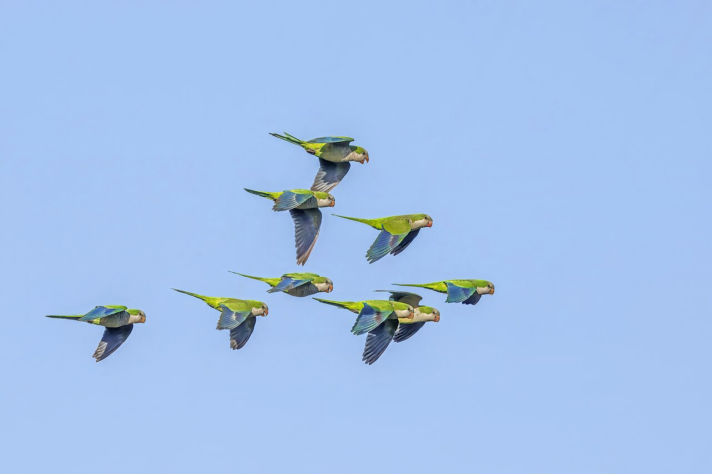
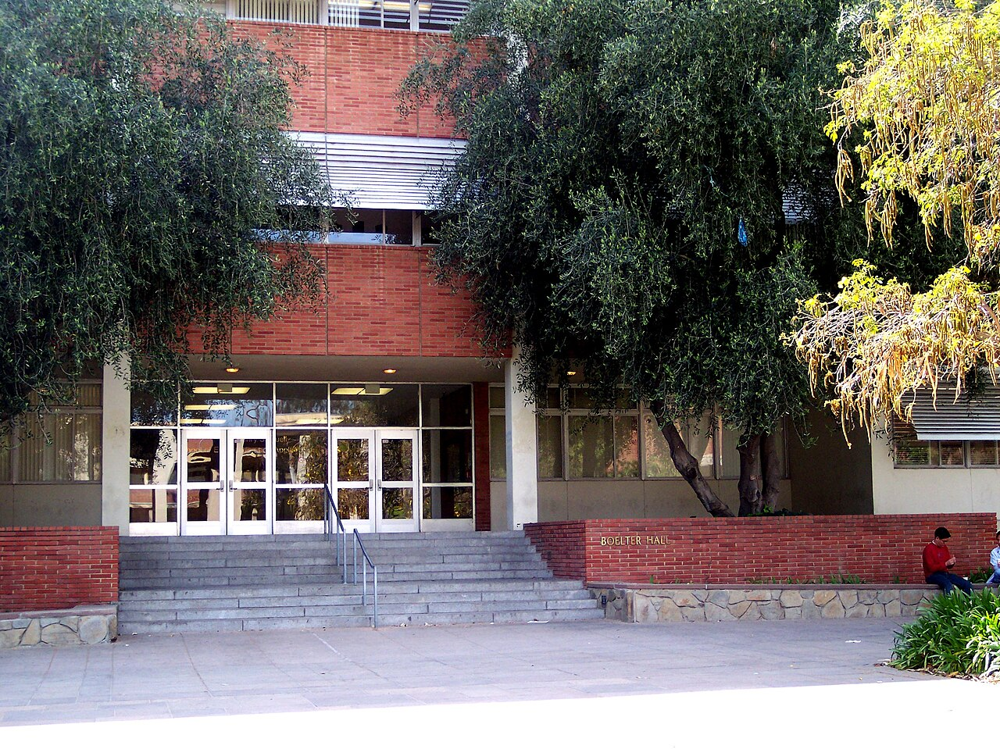

Lula.
diario de la mañana — el mundo, tu ciudad y lo que te asombra

Buen día, y hoy sí: paraguas. El SMN tiene alerta amarilla por tormentas para el AMBA, con la peor parte temprano. La ciencia de hoy es de las que te van a gustar: por primera vez cultivaron juntos un embrión humano y un endometrio humano, los dos hechos en laboratorio, y se pusieron a mirar qué se dicen. Y en cine, La ciénaga, que también empieza con una tormenta.
- El mundo en cinco minutos3'
- Argentina y Buenos Aires2'
- Ciencia: el embrión y el endometrio, conversando7'
- Mirá a tu alrededor2'
- Receta de estación2'
- La palabra del día1'
- Le français du matin2'
- English corner3'
- Jueves de cine: La ciénaga4'
- Hoy en la historia · un lugar2'
- Lo que me asombra hoy1'
- Pasatiempo: sudoku medio12'
- Cuaderno: repaso, quiz y escritura4'
En Israel nadie llega a 61, y los dos dicen que les toca
Con el escrutinio casi terminado, el bloque de Netanyahu quedó alrededor de 53 a 56 bancas y el de Gadi Eisenkot, que encabeza la oposición, cerca de 47 o 48. La Knéset tiene 120 bancas y hacen falta 61: no las tiene ninguno de los dos. Los partidos árabes —Ra'am y la Lista Conjunta— suman unas 19, y eso los vuelve, por primera vez en años, el número que define. Los dos candidatos ya le reclamaron al presidente Isaac Herzog el mandato para intentar formar gobierno; la decisión es suya y puede tardar.
Por qué importa: no es un detalle parlamentario. De ese armado depende quién conduce la guerra regional, y el precio del petróleo —que es el que empuja la inflación de medio mundo, la nuestra incluida— se mueve con cada señal que sale de ahí. Ojo también con los números: cambian según el porcentaje escrutado, así que cualquier cifra de hoy es provisoria.
Mañana cierra la COP17
En Ereván, la cumbre de biodiversidad termina mañana y sigue sin acuerdo sobre lo central: cómo movilizar los 200.000 millones de dólares anuales que el marco de Kunming-Montreal promete hasta 2030. Es la primera revisión de aquellas 23 metas, y el informe oficial dice que menos de la mitad de las evaluadas van en camino. La meta más conocida, el 30×30 —proteger el 30 % de la tierra y el mar para 2030—, está hoy alrededor del 17 % en superficie terrestre.
Y además: el canciller alemán Friedrich Merz está en Tokio con la primera ministra japonesa Sanae Takaichi; Moscú recibe la tercera cumbre Rusia-África; y en la ONU, Cuba volvió a presentar su resolución anual contra el embargo estadounidense.
Tercera rueda en baja: el riesgo país rozó su máximo del año
El riesgo país cerró en 763 puntos, al borde del máximo de 2026, y las acciones argentinas cayeron por tercera rueda consecutiva. El diagnóstico que repiten las mesas es el mismo de toda la semana —el «efecto Lula»: la lectura de que el triunfo en Brasil mejora las chances de la oposición local en 2027—, y se nota sobre todo en los bonos que vencen después de 2027, que son los que dependen de quién gobierne entonces.
El dólar, en cambio, aguantó: el Banco Nación abrió a $1.510 / $1.560, el blue en torno a $1.545 / $1.565, el MEP cerca de $1.571 y el contado con liquidación arriba de $1.650. Según las crónicas, el Tesoro habría vendido unos US$ 100 millones para sostener ese techo, y el Banco Central no compró.
Qué mirar: la brecha entre el oficial y el CCL —hoy del orden del 7 %— y quién está poniendo los dólares. Que el precio no se mueva no significa que no esté pasando nada: puede significar que alguien lo está pagando.
Para hacer en la ciudad
- Desde mañana: arteBA en La Rural, del 30 de octubre al 1 de noviembre.
- Cine: el Gaumont anunció funciones gratuitas de La ciénaga en fílmico por los veinticinco años del estreno. Vale la pena verla proyectada.
Un embrión y un endometrio, los dos de laboratorio, puestos a conversar
De qué estamos hablando: la implantación —el momento en que el embrión se pega al útero y empieza a invadirlo— es la caja negra más grande de la biología humana. Pasa alrededor del día 7 después de la fecundación, adentro del cuerpo, y es donde se pierde la mayoría de los embarazos: no se puede mirar en vivo y casi todo lo que sabemos viene de ratón. Este trabajo de Nature Cell Biology, del grupo de Shaorong Gao, arma las dos mitades por separado en el laboratorio y las pone juntas.

Quién es quién
- Blastocisto: el embrión de cinco o seis días. Una esfera hueca con dos linajes ya separados: la masa celular interna (que será el bebé) y el trofoblasto, la capa de afuera, que será la placenta y es la que invade.
- Blastoide: una estructura parecida a un blastocisto, pero hecha a partir de células madre, sin óvulo ni espermatozoide. Imita la organización del embrión temprano; no es un embrión, y es la pieza que permite hacer estos experimentos sin usar embriones donados.
- Endometrio: la mucosa que recubre el útero por dentro, con dos compartimentos: el epitelio glandular y el estroma, el tejido de sostén que se transforma en el embarazo.
- Assembloide: un organoide al que se le suma otro tipo celular para reconstruir un tejido. Acá: organoides de glándula endometrial más células del estroma, que solos no hacen lo mismo.
- CSF3: el factor estimulante de colonias de granulocitos, el mismo G-CSF que en clínica se usa para levantar neutrófilos. Su receptor es CSF3R. Acá aparece en un papel inesperado: señal del estroma hacia el embrión.
Qué encontraron
- El sistema: cocultivaron blastoides —y también blastocistos humanos donados— con assembloides endometriales, y siguieron con transcriptómica de célula única qué le pasaba a cada compartimento.
- La adaptación es de los dos lados. No es el embrión invadiendo un tejido pasivo: el endometrio cambia su perfil y el embrión cambia el suyo, cada uno en respuesta al otro. De ahí el título del comentario que acompaña el trabajo: «la implantación empieza con una conversación».
- Un estado celular nuevo: en contacto con el endometrio aparece un subtipo de trofoblasto SDC1⁺ MMP7⁺ que no aparece cuando el embrión está solo. SDC1 es sindecano-1, de superficie; MMP7 es una metaloproteasa que degrada matriz: justo lo que necesitás para abrirte paso.
- Y el mensaje identificado: el análisis de comunicación célula-célula apuntó a CSF3 del estroma actuando sobre CSF3R del trofoblasto. Cuando bloquearon esa vía, la adaptación del trofoblasto y la expansión del blastoide se resintieron.
Lectura crítica
- Es un modelo, y lo dice en el título. «Proceso tipo implantación» no es implantación: falta el resto del útero, faltan las células inmunes maternas, falta la sangre.
- Los blastoides no son embriones, y esa diferencia es también su límite: imitan la organización, no la competencia para desarrollarse.
- Cuidado con el salto de la correlación a la causa: los análisis de comunicación celular salen de inferir, a partir de qué ligando y qué receptor se expresan, quién le habla a quién. Acá además hicieron el experimento de bloqueo, que es lo que lo sostiene; sin eso sería solo una hipótesis bonita.
- Yo no vi las figuras. Trabajé con el resumen y con el comentario de News & Views de la misma revista, así que los números finos conviene mirarlos en el paper.
La conexión con lo que estudiás
Acá hay tres materias juntas. Cultivos celulares: el salto del organoide al assembloide es exactamente el tema —no alcanza con un tipo celular, el tejido emerge de la mezcla—. Bioinformática: el hallazgo sale de transcriptómica de célula única y de un análisis ligando-receptor, trabajo de computadora tanto como de mesada. Y biotecnología y derecho: la regla de los 14 días se escribió pensando en embriones de verdad, y nadie se había preguntado qué hacer con algo que se les parece y no lo es.
«A three-dimensional human co-culture system reveals reciprocal embryo–endometrial adaptation at implantation onset». Bi, Tu, Wang y col., Nature Cell Biology, 27 de octubre de 2026 · comentario: Rawlings, «Implantation begins with a conversation», doi:10.1038/s41556-026-02105-5
Biotec en el mundo real · El laboratorio de embriología, acá
En la Argentina la fertilización asistida está cubierta por la ley 26.862 desde 2013, y detrás de cada tratamiento hay un laboratorio donde el trabajo lo hacen, en buena parte, biotecnólogas y biólogas.
- Qué se hace ahí: clasificación de ovocitos, ICSI (inyectar un espermatozoide dentro del ovocito con un micromanipulador), cultivo del embrión hasta blastocisto en incubadoras de atmósfera controlada, y vitrificación: congelar tan rápido que el agua no alcanza a formar cristales y pasa a un estado vítreo. Los cristales son lo que mata la célula.
- Y el análisis genético: el PGT (test genético preimplantacional) biopsia unas pocas células del trofoblasto —no del futuro bebé— y las secuencia para contar cromosomas. Es el mismo linaje celular del que habla el paper de hoy.
- La ciencia local: el IBYME (CONICET) es el centro de referencia en biología de la reproducción del país, con grupos que estudian justamente implantación y receptividad endometrial.
- Salida laboral: embriología clínica, criobiología, citogenética y PGT, calidad en centros de reproducción. Es un sector chico, muy regulado y con demanda estable.
Ciencia en la vida cotidiana · Por qué el aire de hoy temprano olía distinto
Ese olor a tierra antes y durante la lluvia tiene nombre y tiene tres fuentes. La principal es la geosmina, un alcohol bicíclico que fabrican bacterias del suelo del género Streptomyces: tu nariz la detecta en concentraciones de partes por billón, somos extraordinariamente sensibles a ella. La segunda es el petricor propiamente dicho, aceites vegetales que se acumulan en las rocas y el suelo seco y que las primeras gotas liberan al aire, en aerosoles diminutos que la gota genera al impactar. La tercera es el ozono, que la actividad eléctrica de la tormenta forma arriba y las corrientes descendentes bajan: ese olor metálico, más limpio, que se siente antes de que llueva.
El dato que sirve: olés geosmina mejor que casi cualquier otro animal, y sin embargo te resulta desagradable en el agua potable o en un vino. La misma molécula: el contexto decide si es «lluvia» o «a humedad».
El jacarandá, que está por explotar, y la cotorra


_flock_in_flight_Colonia.jpg){kind=link}
El árbol: jacarandá
| Nombre científico | Jacaranda mimosifolia (Bignoniáceas, como el lapacho). Es del noroeste argentino y del sur de Bolivia, no de Buenos Aires: lo trajo y lo plantó en masa Carlos Thays hace más de un siglo. |
|---|---|
| Cómo reconocerlo | Hoja bipinnada, finísima, como un helecho; flor en campana violeta, en racimos; y después unas cápsulas leñosas, chatas y redondas, que quedan colgando todo el año. |
| Por qué ahora | Es su semana. Florece entre fines de octubre y noviembre y, como pierde las hojas justo antes, el árbol queda violeta entero, sin verde que lo interrumpa. Dura dos o tres semanas y después la vereda queda alfombrada. |
El ave: cotorra
| Nombre científico | Myiopsitta monachus (Psitácidos). Verde, con el pecho y la frente grises, y un chillido que no se confunde con nada. |
|---|---|
| Cómo reconocerla | Por el nido, antes que por el ave: es el único loro del mundo que construye un nido de ramitas en vez de usar un hueco. Nidos enormes, de varios kilos, con cámaras separadas para distintas parejas, en eucaliptos y en postes de luz. |
| Lo asombroso | Ese nido comunitario, que usan todo el año y no solo para criar, es lo que le permitió colonizar medio mundo: hay colonias asilvestradas en Madrid, Nueva York, Bruselas y Tel Aviv, todas descendientes de aves exportadas desde acá como mascotas en los años sesenta y setenta. |
Sopa de papa y puerro
Treinta minutos, cinco ingredientes y un día de tormenta que la justifica.
Ingredientes
- 2 puerros grandes (lo blanco y lo verde claro)
- 3 papas medianas
- 1 litro de caldo de verdura o agua
- Una nuez de manteca y un chorro de aceite
- Leche o crema al final, sal, pimienta blanca
Pasos
- Lavá bien el puerro abierto a lo largo: la tierra se esconde entre las capas.
- Rehogalo en manteca y aceite a fuego bajo, 10 minutos, sin que tome color.
- Sumá la papa en cubos y el caldo. Herví 20 minutos, hasta que la papa se deshaga sola.
- Pisá con pisapapas o procesá poco. Terminá con leche o crema fuera del fuego.
La química de la receta
Por qué no hay que pasarla por la minipimer: es el error clásico. Los gránulos de almidón de la papa, ya gelatinizados por la cocción, están adentro de las células; si las rompés con cuchillas a alta velocidad, liberás ese almidón al líquido y la sopa se vuelve pegajosa, elástica, como engrudo. El pisapapas separa las células sin reventarlas. Si querés algo muy liso, procesá apenas y aceptá que quede un poco rústica.
Por qué el puerro va lento y sin dorar: es un Allium, como la cebolla y el ajo. Al cortarlo libera compuestos azufrados; con calor suave se degradan a moléculas dulces y suaves, y si lo dorás aparecen notas tostadas que acá tapan el sabor. Es una receta donde el objetivo es el azúcar, no el Maillard.
Y la leche al final: hervir una sopa ácida con leche corta las proteínas. Fuera del fuego, abajo de 70 °C, la caseína se queda tranquila y la sopa sale sedosa.
matriz sustantivo
latín mater (madre) → matrix (hembra reproductora; útero) → castellano matriz · francés matrice · inglés matrix
En latín, matrix era primero la hembra que se dejaba para cría y después, directamente, el útero. De ahí salió todo lo demás por una misma imagen: aquello dentro de lo cual algo se forma. El molde del fundidor es una matriz; la empresa madre es la casa matriz; el registro original del que salen las copias es la matriz; y en el siglo XIX los matemáticos llamaron matrix a esa grilla de números de la que se «extraen» determinantes.
En biología conservó los dos sentidos. La matriz extracelular —colágeno, fibronectina, proteoglicanos— es aquello dentro de lo cual la célula vive, y no es relleno pasivo: define a qué se puede pegar, por dónde migrar y hasta qué genes prende. La MMP7 del trabajo de hoy, la metaloproteasa que aparece en el trofoblasto, se llama así justamente porque degrada esa matriz. El embrión, para entrar en la matriz en el sentido viejo de la palabra, tiene que digerir la matriz en el sentido nuevo.
Où est la station de métro ?
— Pardon, où est la station de métro ?
— C'est tout droit, puis à gauche.
— C'est loin ?
— Non, à cinq minutes. Merci beaucoup !
| où est… ? | ¿dónde está…? [u E] |
|---|---|
| tout droit | todo derecho [tu DRUÁ] |
| à gauche / à droite | a la izquierda / a la derecha [a GOSH / a DRUAT] |
| c'est loin ? | ¿queda lejos? [se LUÁN] |
Un truco
Ojo con el par droit / droite, que parecen lo mismo y no lo son: tout droit es «derecho» en el sentido de seguir de frente, y à droite es «a la derecha». Si decís tout droit cuando querías doblar, te mandan al otro lado de París. Y arrancá siempre con pardon o excusez-moi: en Francia, preguntar sin saludar primero se escucha brusco, más que en cualquier otro idioma que conozcas.
Fourteen days, and what to do with something that is not quite an embryo
For half a century the ground rule of embryo research was admirably crisp: nothing may be grown in a dish beyond fourteen days. The line was drawn where the primitive streak appears, and it had the great virtue of being a line at all — enforceable, legible to the public, and unambiguous. It was also, as its own authors conceded at the time, a convention rather than a discovery.
Stem-cell-derived models have blurred it from an unexpected direction. A blastoid is not an embryo; it was never fertilised and, on current evidence, could not become a person. Yet it organises itself like one, and that is precisely why it is useful. Rules written to govern an entity defined by its origin now have to contend with entities defined by their behaviour, and the two do not map onto each other.
The tempting response is to say that if it is not an embryo, no limits apply. The more honest one is to accept that our categories have been overtaken, and that drawing a new line will require saying out loud what the old one was protecting — which the fourteen-day rule allowed us, conveniently, never to spell out.
- a ground rule — una regla básica, de las que se acuerdan de entrada
- crisp — nítido, sin ambigüedad
- to concede — admitir, reconocer
- to blur — desdibujar
- to contend with — lidiar con
- to map onto — corresponderse con, encajar sobre
- to be overtaken — quedar superado (por los hechos)
- to spell out — decir con todas las letras
La ciénaga (2001): veinticinco años de la película que cambió el cine argentino
Empieza con un ruido: sillas de metal arrastradas al borde de una pileta de agua podrida, truenos lejos, hielo en los vasos. Todavía no pasó nada y ya sabés que algo va a pasar. Lucrecia Martel filmó su primera película a los 34 años, en Salta, con un guion que había ganado el premio del Sundance Institute y la NHK japonesa a fines de los noventa, y en la Berlinale de 2001 se llevó el premio Alfred Bauer, el que se da a las películas que abren perspectivas nuevas.
Qué hay que escuchar
- El sonido antes que la imagen. Martel viene de escuchar: construye las escenas desde el fuera de campo. Los perros, un disparo, la tele en otro cuarto, el zumbido del verano. Lo que no se ve organiza lo que se ve, y la amenaza nunca se muestra.
- La cámara a la altura de la pileta. Planos cortos, cuerpos cortados por el encuadre, casi nada de plano general: no sabés bien dónde estás, igual que los chicos de la película.
- Una clase social mirada sin piedad y sin caricatura: la burguesía salteña en decadencia, el alcohol como clima, el racismo cotidiano hacia las empleadas, y ningún personaje al que agarrarse.
- El elenco: Graciela Borges y Mercedes Morán sostienen todo, rodeadas de adolescentes que en su mayoría no eran actores.
Lo que cambió fue el permiso. Hasta entonces una película argentina «seria» tendía a explicar: tesis, contexto, un personaje que dice lo que hay que entender. La ciénaga no explica nada y confía en que vas a leer el aire. Después vinieron La niña santa y La mujer sin cabeza, que completan la trilogía salteña, y más tarde Zama.
Mirala con auriculares o en cine, no con el celular al lado. La mitad de la película está en el sonido, y es la mitad que se pierde primero.
29 de octubre de 1969: el primer mensaje de internet fue «lo»
A las diez y media de la noche, un estudiante llamado Charley Kline, en el laboratorio de Leonard Kleinrock en la UCLA, intentó entrar en una computadora del Stanford Research Institute, a 600 kilómetros, por la flamante red ARPANET. Tenía a Bill Duvall del otro lado, por teléfono, confirmando letra por letra. Escribió la L: llegó. La O: llegó. La G: el sistema remoto se cayó. El primer mensaje transmitido entre dos computadoras de la red que terminaría siendo internet fue, entonces, «lo».
Una hora después ya funcionaba. Para fin de año la red tenía cuatro nodos; hoy tiene algo así como veinte mil millones de aparatos conectados.
El lugar: UCLA, Los Ángeles

| Dónde | En Westwood, al oeste de Los Ángeles, entre la ciudad y las colinas. El primer nodo de ARPANET estuvo en el aula 3420 de Boelter Hall. |
|---|---|
| Qué quedó | La sala está reconstruida tal como era, con el IMP —el ruteador original, del tamaño de una heladera— en su lugar. Se puede visitar. |
| Y el detalle | ARPANET era un proyecto del Departamento de Defensa, pero quienes la armaron eran universitarios: la cultura de «esto se comparte» que define a internet viene de ahí, no del Pentágono. |
El embarazo es el único injerto que el cuerpo no rechaza
Pensalo desde la inmunología y es absurdo. La mitad de los genes del embrión son del padre: para el sistema inmune materno es tejido ajeno, como un riñón trasplantado. Un trasplante de riñón necesita inmunosupresores de por vida. Un embarazo dura nueve meses sin nada de eso, y además con el tejido fetal invadiendo activamente las arterias maternas.
Cómo se resuelve es de lo más elegante que conozco. El trofoblasto —el mismo linaje del trabajo de hoy— prácticamente no expresa las moléculas HLA clásicas con las que el sistema inmune distingue lo propio de lo ajeno. Pero una célula sin HLA sería atacada por las células NK, que matan justamente a lo que no muestra identidad. Entonces expresa otra: HLA-G, que no sirve para acusar y sí para calmar. Y las NK del útero, una población distinta de las de la sangre, en vez de atacar ayudan a remodelar los vasos.
O sea: no es que el embrión se esconda del sistema inmune. Negocia con él en un dialecto propio y lo pone a trabajar. Esa conversación empieza el día de la implantación: exactamente el momento que acaban de poner abajo de un microscopio.
El del jueves
Repaso y quiz de la mañana
Repaso de idiomas
Quiz
¿Qué es un blastoide?
El hallazgo central del trabajo de hoy es que…
MMP7, que aparece en ese trofoblasto nuevo, sirve para…
¿Por qué la sopa de papa se vuelve pegajosa si la procesás mucho?
«Matriz» viene de…
El primer mensaje de ARPANET, el 29/10/1969, fue…
¿Qué molécula expresa el trofoblasto para calmar a las células NK?
Escritura
- Quiz: una estructura tipo blastocisto de células madre · los dos se adaptan, con CSF3 · degradar matriz · se libera almidón · mater · «lo» · HLA-G.
- Repaso: quelle température fait-il ? · il va pleuvoir · tout droit, puis à gauche · la letra chica · indulgente, que perdona errores · decir con todas las letras.
- Francés: por ejemplo, «Pardon, où est le café ? — C'est tout droit, puis à droite. — C'est loin ? — Non, à deux minutes.»
Sudoku:
Fuentes de esta edición
- Mundo: Infobae: el escrutinio israelí · CNN en Español · COP17 en Ereván
- Mercados: Infobae: riesgo país y acciones · Ámbito: el dólar hoy
- Clima: MDZ (datos del SMN) · Alerta amarilla del SMN
- Ciencia: Nature Cell Biology: «Implantation begins with a conversation» · el paper, en el número del 27 de octubre · IBYME (CONICET)
- Cine: Otros Cines: La ciénaga en el Gaumont · Berlinale 2001, premio Alfred Bauer
Mañana, viernes: música. — Lula.